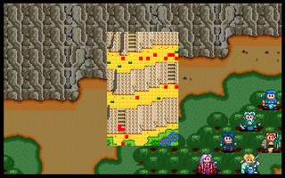

第五章B 西山道

 雷特
雷特 米兰
米兰 克隆
克隆 艾利欧
艾利欧 巴拉多
巴拉多 洛加
洛加 希瓦那
希瓦那
本关敌人：
LV5 布里德 （HP360,AP90,DP115,HIT95,EV35,MV3,圣光弹,灵疗术）
 LV4 护卫 （HP300,AP83,DP60,HIT97,EV12,MV4）
LV4 护卫 （HP300,AP83,DP60,HIT97,EV12,MV4）
LV4 小队长 （HP300,AP136,DP52,HIT102,EV12,MV4）
 LV3 士兵x6 （HP180,AP81,DP27,HIT88,EV3,MV4）
LV3 士兵x6 （HP180,AP81,DP27,HIT88,EV3,MV4）
 LV3 弓箭手x4 （HP100,AP126,DP10,HIT88,EV9,MV4）
LV3 弓箭手x4 （HP100,AP126,DP10,HIT88,EV9,MV4）
 LV3 僧侣x3 （HP80,AP30,DP32,HIT83,EV3,MV4,聚合气）
LV3 僧侣x3 （HP80,AP30,DP32,HIT83,EV3,MV4,聚合气）
胜利条件：敌人全灭
失败条件：雷特死亡
战后加入：
 LV5 战士 卡里斯 （HP300,AP132,DP50,HIT118,EV19,MV4,长剑,环状甲,药草x2）
LV5 战士 卡里斯 （HP300,AP132,DP50,HIT118,EV19,MV4,长剑,环状甲,药草x2）
战后报酬：
$1500G/$4500G
攻略简要：
此关与东山道地形差不多，只是魔法师变成了弓箭手和僧侣，而且此关的BOSS布里德有比较变态的魔法圣光弹，不光攻击距离达到了9格，而且伤害也达到了300左右，所以，最少还是需要穿锁子甲的人物来充当肉盾(希瓦那加入时身上有一件)，以补血的方式消耗她的魔法，然后它就看你处置了，看是要生吞还是火烤都无所谓，也可以拿来练等级，经验值相当多，想打大邪神的还是不要练太高，像笔者我就是这关练太高，结果第7章反而把黑龙王挂了......，这样重练一定欲哭无泪，所以还是看自己的状况决定，此关结束后，卡里斯将会前来，带领主角们去帮忙圣者。
战后商店道具:
武器： |
防具： |
道具： |
剧情对话：
希瓦那:这里是通往潘达拉山顶的小路，虽然较东山道难走，但是距离较近。应该还来得及追上莱卡斯他们?
米兰:不过他们为什么要来到这里...难道他们要对圣者有所不利?
克隆:圣者不问世事已久，为何哈奇突然要对付圣者而且他还知道我们隐居于利达村的事，这实在大有蹊跷...
艾利欧:既然圣者知识渊博，我们不妨请教他看看，或许可以知道一些事情吧!
巴拉多:等等!山上有人影晃动，看来莱卡斯已经布下了埋伏。
雷特:为了不使圣者受到伤害我们还是赶快赶到山顶上，唯今之计，就只有强行突破了!
负责把守西山道的是法师布里德,会使用传说的圣光弹,干掉了布里德等人,战斗结束
卡里斯:请等一下，请问雷特王子是否在此?
雷特:我就是雷特。你是...
卡里斯:我是卡里斯，一名四处流浪的武术家。前几天来这里拜访圣者时，圣者预知王子会来，便要我先来到此地等候王子。
克隆:圣者果然料事如神!那么圣者是否有什么事情交待呢?
卡里斯:圣者要我带领你们去找他。据他所说，有一个空前的危机已经接近，必须借着王子的力量才能解除。
克隆:圣者所说的危机难道是指莱卡斯?既然如此的话，我们赶快到圣者那里，不然圣者可能会有危险!
卡里斯:有人要对圣者不利?这...请王子赶快随我来吧!
第五章完